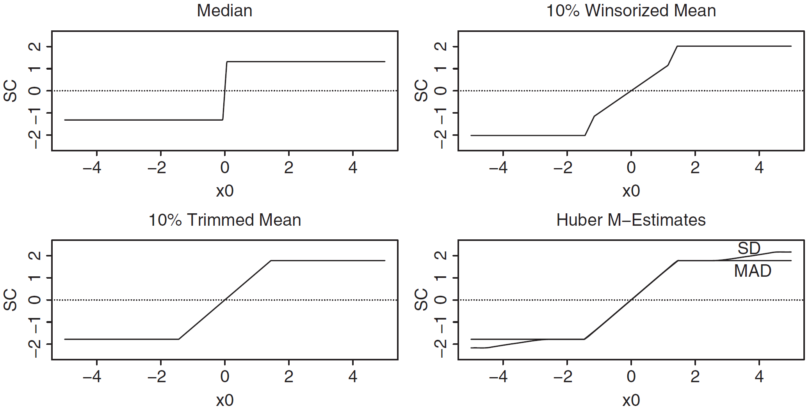

通过前面的学习，我们已经了解了各种经典回归模型的架构。然而，无论哪种回归模型，都存在一个问题：对数据集中的异常值过于敏感。如果数据集中出现了异常值，就会使得回归平面向异常值偏移，造成拟合偏差。你或许想把这些异常值剔除掉，但是在实际应用中，有些异常值是真实观测值而非仪器、人为等原因造成，这些点不能简单剔除，否则会影响模型的泛化性。因此，我们需要在不改变模型结构的情况下使得模型能够“容忍”异常值，削弱异常值对回归平面的影响。这就是本讲要介绍的稳健回归(Robust Regression)模型。
泛化性(Generalization)，是指已完成训练的模型在遇到没有见过的新数据时也能够表现出良好的能力，这是所有模型都希望做到的一点。如果模型对异常值的容忍度很差，那么在遇到新数据时表现就会很差，即出现很大的预测误差。
本讲中，我们先补充稳健统计的预备知识，之后再介绍一些常见的稳健回归模型。
一、稳健统计简介
1.1 稳健统计量的概念
稳健(Robustness)，是指统计量在遇到异常值时仍然能够保持精度(Precision)和准度(Accuracy)，而不会因为异常值的出现使得统计量发生大幅变化。例如，我们熟知的样本均值和方差就是典型的非稳健的统计量：
x=n1i=1∑nxi s2=n−11i=1∑n(xi−x)2
如果在样本中出现了一个极端值，会显著影响两个统计量的值，从而使得我们无法把握绝大部分“正常值”的特征，因此我们说这两个统计量是非稳健的。那么什么样的统计量是稳健的呢？
例如，样本的中位数就是稳健的。如果我们称一个数t是一组样本x=(x1,⋯,xn)的中位数，那么t可以记作：
t=Med(x),if #(xi>t)=#(xi<t)
其中#()代表满足括号内条件的样本的个数。也就是说，中位数的左右两边的样本量是一致的。
如果我们把样本重新编为顺序统计量x=(x(1),⋯,x(n))，那么有：
Med(x)={x(m),(x(m)+x(m+1))/2,n is odd, n=2m−1n is even, n=2m
可以看出，样本中位数是样本均值的稳健版本，因为如果出现了极端值，中位数只会发生微弱变化（中位数只与相邻的数有关）。
理解了什么是稳健统计量后，接下来我们看一些常见的稳健统计量。一般地，我们把稳健统计量分为两类：一类是描述数据位置的统计量，另一类是描述数据波动的统计量。
1.2 数据位置的稳健统计量
数据位置，是指一组样本数据的分布中心(Location)。严谨来说，我们认为每一个样本的观测值xi由两部分组成：一部分是测量对象的真实值μ，另一部分是随机误差ui，即：
xi=μ+ui i=1,⋯,n
如果误差独立同分布F0，那么观测值也独立同分布：
F(x)=F0(x−μ)
数据位置的稳健统计量，就是要找到一个稳健估计子μ^，使得μ^≈μ。一个好的位置稳健估计子应当具有两个性质，第一是平移不变性(Shift Equivariance)，即：
μ^(x1+c,⋯,xn+c)=μ^(x1,⋯,xn)+c
第二是尺度不变性(Scale Equivariance)，即：
μ^(cx1,⋯,cxn)=cμ^(x1,⋯,xn)
很多时候，我们会假设随机误差精确服从均值为0的正态分布，那么观测值就服从均值为μ的正态分布，此时样本均值就是最优的估计子，并且具有平移不变性和尺度不变性。然而，实际测量数据是渐进正态的，所以为了构造稳健统计量，我们需要对观测值的分布进行新的假定。一般有两种方式。
第一种称为污染正态分布(Contaminated Normal Distribution)，又称为Tukey-Huber模型，它假设有ϵ比例的观测值不是由正态分布G产生的，而是由其他未知分布H产生，因此观测值的分布可以写成分布的混合叠加，即：
F=(1−ϵ)G+ϵH
第二种是使用重尾分布(Heavy-tailed Distribution)，即概率密度趋近于0的速度更慢，例如Student分布家族：
f(x,v)=vπ Γ(v/2)Γ((v+1)/2)(1+vx2)−(v+1)/2
常见可取v=1，这样就变成了柯西分布(Cauchy Distribution)。
有了估计模型和分布之后，我们来考虑数据位置的稳健估计量。数据位置的稳健估计量可以分为两大类：M估计和L估计。
M估计。M估计是Huber在1964年提出的一类估计，其基本思想是，最小化测量值和真实值之间的随机误差，即：
μ^=argμmini=1∑nρ(xi−μ)
其中ρ=−logf0，称为ρ函数；f0是随机误差ui的概率密度函数。
进一步地，如果f0可微分，那么令ψ=ρ′，那么上述优化目标相当于求解：
i=1∑nψ(xi−μ^)=0
如果随机误差服从标准正态分布（白噪声），那么可以求得ρ(x)=x2/2，于是就类似于最小二乘法，相当于最小化平方损失。通过上述方程可以解得μ^=x，此时M估计就是样本均值。
如果随机误差服从双指数分布，即f0(x)=e−∣x∣/2，那么可以求得ρ(x)=∣x∣。这种估计被称为最小绝对偏差(Least Absolute Deviation, LAD)。可以解得μ^=Med(x)，此时M估计就是样本中位数。
当然，除了这些，Huber本人还提出了自己的估计方法，即取：
ρ(x,k)=⎩⎨⎧21x2,∣x∣≤kk∣x∣−21k2,∣x∣>k
还有一些别的常用方法，例如Hampel方法是取：
ψ(x,a,b,c)=⎩⎨⎧x,∣x∣≤aa×sign(x),a<∣x∣≤ba×c−bc−∣x∣×sign(x),b<∣x∣≤c0,∣x∣>c
Bisquare方法（或称Tukey’s Biweight方法）是取：
ψ(x,c)=⎩⎨⎧x(1−(cx)2)2,∣x∣≤c0,∣x∣>c
可以证明，所有的M估计子都具有平移不变性；均值和中位数估计子具有放缩不变性，但并不是所有的M估计子都具有放缩不变性。
L估计。L估计又称为线性组合估计，也就是说，真实值的估计值表达为各个样本测量值的线性组合。一般地，我们使用顺序统计量的权重之和来估计，即：
μ^=i=1∑naix(i)
这里我们介绍两种L估计。第一种称为截断均值，即去掉前m个最小值和后m个最大值之后，再取平均：
xα=n−2m1i=m+1∑n−mx(i)
其中α∈[0,1/2)，m=[nα]，[]表示取整。
如果写成L估计的标准形式就是取：
ai=n−2m1I(m+1≤i≤n−m)
第二种是Winsor均值，其实就是在截断均值的基础上加入两个截断端点的值，但是依据样本总量来平均，即：
xα=n1(mx(m)+mx(n−m+1)+i=m+1∑n−mx(i))
其中m,α同前。
如果写成L估计的标准形式就是取：
ai=n1[mI(i=m)+mI(i=n−m+1)+I(m+1≤i≤n−m)]
可以证明，当满足下列条件时，L估计子都满足平移不变性和放缩不变性：
ai≥0,i=1∑nai=1,ai=an−i+1
1.3 数据波动的稳健统计量
除了考虑数据分布的中心，还要考虑数据分布的波动性(Dispersion)。描述数据分布波动的方法大致有两类：一类是带尺度参数的形式，另一类是非参数的形式。
带尺度参数的形式。带尺度参数，是指样本观测值可以表示为随机误差的倍数，即：
xi=σui i=1,⋯,n
其中σ被称为尺度参数。
要估计尺度参数，可以使用1.2小节中提到的M估计：
n1i=1∑nρ(σ^xi)=δ
其中ρ()代表M估计中的各种ρ函数，δ是大于0的常数。
要使得上述方程有解，需要规定0<δ<ρ(∞)。例如，如果ρ函数在无穷处的上界为1，那么δ∈(0,1)。
非参数的形式。有时候我们无法假定数据波动的形式，就需要一些不含参数的统计量来描述数据的波动性。我们最开始接触的统计量就是标准差（或方差），即：
SD(x)=[n−11i=1∑n(xi−x)2]1/2
不难看出，标准差具有平移不变性和尺度不变性。
然而，标准差是不稳健的，因为它和样本均值紧密联系。因此，我们应该考虑构建一个稳定版本的标准差/方差。我们首先定义中位绝对偏差(median absolute deviation about the median, MAD)：
MAD(x)=Med(∣x−Med(x)∣)
MAD就是稳健版本的样本方差，并且具有平移不变性和尺度不变性。
有了MAD就可以考虑构造稳健版本的样本标准差，不过我们肯定不能直接开平方根。我们这样构造：
MADN(x)=0.6745MAD(x)=1.4826×MAD(x)
这个被称为标准化MAD(Normalized MAD, MADN)，相当于是稳健版本的样本标准差。
你或许对0.6745感到很莫名其妙。取这个数是因为一个标准正态分布的MAD大约是其标准差的0.6745倍，因此我们采用这个值来进行标准化。
除了MAD，我们再介绍两个统计量用于描述数据的波动性。
极差(Range)。极差就是样本最大值和最小值的差，即：
max(x)−min(x)=x(n)−x(1)
极差是不稳健的，因为异常值往往发生在最小值和最大值处。
四分位距(Inter-Quartile Range)。四分位距就是第三个四分位数和第一个四分位数的差，即：
IQR(x)=x(n−m+1)−x(m),m=[n/4]
四分位距是稳健的，因为异常值只会微弱影响分位数的取值。另外，IQR是可以标准化的：
IQRN=2×0.675IQR
1.4 数据位置和波动的同时估计
前面我们介绍了多种不同的稳健统计量，但是存在一些问题。首先，位置模型的M估计很高效，但是无法估计数据波动性；其次，数据波动的稳健估计需要对全体数据进行排序，在数据量大时效率很低。因此，我们考虑把各方的优缺点结合起来，定义新的模型：
xi=μ+σui
这个模型被称为位置-分散模型(Location-Disperstion Model)，这里的σ是随机变量ui的一个尺度参数，同时也是关于xi的一个分散参数。通过这个模型，我们可以同时估计数据中心和数据波动。
设误差ui的分布密度是f0，取ρ0=−logf0，那么上述模型的优化目标是：
(μ^,σ^)=argμ,σmin{n1i=1∑nρ0(σxi−μ)+logσ}
分别对两个参数求偏导，等价于求解：
i=1∑nψ(σ^xi−μ^)=0n1i=1∑nρscale(σ^xi−μ^)=δ
其中：
ψ(x)=−ρ0′,ρscale(x)=xψ(x),δ=1
这个方程组的结构很重要，在下一节稳健回归模型中的很多估计子就是这样的结构。
1.5 稳健性的测量
在稳健统计的最后，我们探讨一个问题：如何衡量稳健性？
一个比较直接的想法是，对于已有的估计μ^(x1,⋯,xn)，我们额外加入一个新的样本点x0，重新计算μ^(x1,⋯,xn,x0)，再对二者进行比较：
SC=μ^(x1,⋯,xn,x0)−μ^(x1,⋯,xn)
这里的SC就是敏感性曲线(Sensitivity Curve)，我们可以绘制这样一张敏感性曲线图，即以新样本x0的值为横坐标，SC值为纵坐标，就能查看在加入新样本后统计量的SC的变化：

上图的原有样本来自标准正态分布，Huber的M估计取k=1.37，并且分别用SD和MAD估计了分散参数。
SC的方法虽然直观，但是从数学上来看不太严谨。接下来，我们把这种“扰动”再数学化一些。
假设一组样本x=(x1,⋯,xn)由n个独立同分布F的随机变量构成，设估计子θ^n=θ^n(x)，当样本量趋于无穷时，该估计子依概率收敛于一个渐近值：
θ^n⟶pθ^∞(F)
这个值被称为估计子在分布F下的渐近值。
- 例如，如果估计子是样本均值，即θ^n=x，那么θ^∞(F)=EF(x)，也就是分布F的期望；
- 再比如，如果估计子是样本中位数，即θ^n=Med(x)，那么θ^∞(F)=F−1(0.5)，也就是分布F的中位数；
- 再进一步，如果θ^n是位置模型的M估计子，且ψ是单调的，那么θ^∞(F)是方程EF[ψ(x−θ)]=0的解。
有了渐近值的概念后，Hampel在1974年提出了敏感性曲线的一个渐近版本，称之为影响函数(Influence Function, IF)，其定义为：
IFθ^(x0,F)=ϵ→0+limϵθ^∞((1−ϵ)F+ϵδx0)−θ^∞(F)=∂ϵ∂θ^∞((1−ϵ)F+ϵδ0)ϵ→0+
其中δx0是x0处的点质量(point mass)，也就是P(x=x0)=1的分布。
影响函数刻画了加入新样本x0时对样本分布F下估计子的扰动，也就是稳健性的衡量。如果影响函数是有界的，说明这个估计子是稳健的。
对于样本均值估计子μ，影响函数为IF=x0−μ，无界，说明是不稳健的；
对于样本中位数估计子θ，影响函数为IF=sign(x0−θ)/(2f(θ))，有界，说明是稳健的；
对于M估计，其估计子就是下面方程的解：
i=1∑nΨ(xi,θ^)=0
因此，M估计的影响函数为：
IFθ^(x0,F)=−B(θ^∞,Ψ)Ψ(x0,θ^∞),B(θ^∞,Ψ)=∂θ∂EΨ(x,θ)
对于截断均值估计，其影响函数为：
IFμ^(x0,F)=1−2αψk(x−μ^∞)
其中ψ是Huber估计，k=F−1(1−α)。
除了影响函数，我们再介绍一个衡量指标：崩溃点(Breaking Point, BP)。崩溃点用于描述一个估计子最多能忍受多少比例的异常值，也就是说，在保证估计子估计不失效的情况下所能容忍的最大污染比例。
严谨来说，我们设Θ是参数θ的可取范围，如果分布为F的样本的一个估计子θ^的崩溃点是ϵ∗，ϵ∗∈(0,1)，那么对于任意ϵ<ϵ∗和任意污染分布G，存在一个有界闭集K⊂Θ，且K远离Θ的边界，使得：
θ^∞((1−ϵ)F+ϵG)∈K
对于位置参数的M估计，我们令k1=−ψ(−∞)，k2=ψ(∞)，且k1,k2有界，那么崩溃点为：
ϵ∗=k1+k2min(k1,k2)
例如，均值就是无界的，崩溃点是0；中位数的ψ(x)=sgn(x)，k1=k2=1，那么崩溃点就是1/2，这也很容易理解，即当一半数据都被污染时才会影响中位数；截断均值的崩溃点与α的选择有关，崩溃点就等于α。
对于分散参数的估计，标准差的崩溃点是0，MAD是1/2，IQR是1/4。
对于位置-分散模型，其崩溃点更复杂一些，但一般来说小于0.5。如果使用Huber的ψk，那么崩溃点是：
ϵ∗=min(0.5,k+0.6750.675)
也就是说，Huber估计的崩溃点是可以调整的。
二、稳健线性回归模型
在第一节中，我们花费了大量篇幅讲解稳健统计，相信你应该对该领域的一些基础知识有一定了解。在这一节，我们要把稳健统计方法应用到线性回归模型当中。
2.1 M-线性回归
我们已经知道，线性回归的框架是：
yi=xiTβ+ei
如果迁移到位置-分散模型框架下，那么yi就是观测值，xiTβ就是要拟合的真实值，ei是随机误差。由于M估计是最小化随机误差，于是对于线性回归来说，其M估计为：
β^=argβmini=1∑nρ(σri(β))
其中ri(β^)=yi−xiTβ。
假定ρ可微分，要求解回归系数，只需对β求偏导并令其为0，于是得到：
i=1∑nψ(σri(β^))xi=0
其中ψ=ρ0′。
如果误差服从正态分布，那么ψ(x)=x，求得的回归系数就是最小二乘法估计；如果误差服从双指数分布，那么ψ(x)=sgn(x)，求得的回归系数就是最小绝对偏差估计（又叫做L1估计）；如果ψ取Huber函数，得到的就是Huber估计。
一般来说，直接求上述方程组的解比较困难，并且要假定σ已知，所以不太实用。我们将方程组改写为：
i=1∑nσri(β^)ψ(σri(β^))ri(β^)xi=0
可以看到，ψ(x)/x部分在每一个样本中是一个常数，ri(β^)是残差，你会发现这个方程组的解其实就是加权最小二乘解，ψ(x)/x部分就是权重。因此，我们可以把M估计转化为加权最小二乘解来进行，这样就非常高效。于是我们可以做如下迭代：
- 初始化。先通过最小二乘法求得β的初始解β0，然后计算残差ri=yi−xiTβ0，根据残差的MAD值求得分散参数σ的初始解σ=MAD(ri)/0.6745。
- 计算标准化残差，即ui=ri/σ。
- 计算权重，即wi=ψ(ui)/ui。ψ()可取各种ρ函数的导数。
- 计算加权最小二乘解，即βnew=(XTWX)−1XTWy。
- 更新尺度参数，即σnew=MAD(ri)/0.6745。
- 使用新的βnew计算新的残差ri=yi−xiTβnew，结合新的σnew重复2~5步，直至收敛。
另外，尺度参数的更新除了使用标准MAD，还可以使用1.4小节中的：
n1i=1∑nρscale(σri)=δ
其中δ一般取标准正态分布随机变量在ρ函数中的期望，即δ=Eρscale(Z),Z∼N(0,1)。
最后我们讨论M-线性回归的崩溃点。遗憾的是，由于M-线性回归仍然以残差来建模，所以导致M-线性回归的崩溃点很低。如果完全允许高杠杆点的出现（自变量很大并且响应变量很坏），那么崩溃点只有
ϵ∗=n1
如果自变量正常，但响应变量（目标观测值）异常，那么崩溃点会提高：
ϵ∗=p1
综合来说，M-线性回归不算特别稳健的线性回归模型，我们需要寻找崩溃点更高的估计。
2.2 LTS线性回归
最小截断二乘(Least Trimmed Squares, LTS)是Rousseeuw提出的方法，其基本思想还是利用残差，但是只使用残差最小的前h个观测点进行回归。也就是说，先计算残差ri=yi−xiTβ，再对残差进行排序：
r(1)≤⋯≤r(n)
取前h个最小的残差，求平方和，构成优化目标：
β^LTS=argβmini=1∑hr(i)2
一般地，h取
h=[2n+p+1]
其中[ ]表示取整。
可以证明，LTS估计的崩溃点可以达到50%，非常稳健。
然而，LTS的优化目标是非光滑、不连续的，所以不能使用梯度法来求解。这里我们介绍一个经典的算法：Fast-LTS。Fast-LTS的基本步骤为：
- 随机抽取p+1个样本，计算最小二乘解β0=(X0TX0)−1X0Ty0作为初始解。
- 计算所有残差，即ri=yi−xiTβ0，排序。
- 取残差最小的前h个样本，计算最小二乘解βH=(XHTXH)−1XHTyH，这一步被称为C步(Concentration Step)
- 依照βH计算残差，重复第三步，直至目标函数不再下降，得到局部最优解。
- 重复1~4步，从而实现多次随机抽取并优化，选择目标函数最小的解作为LTS回归的最终解。
LTS回归的稳健性很好，适合混有大量异常值和污染数据的情形。然而，LTS的搜索效率较低、需要进行数据排序、计算难度很大，所以一般用于进行初步的异常值检测，或者为其他算法提供初始解。
2.3 S-线性回归
无论是M-线性回归还是LTS回归，本质上都在最小化残差的大小。然而，Rousseeuw和Yohai指出，还可以通过最小化残差的尺度参数来进行估计，这样能获得更稳健的结果。S-线性回归就是这样一种策略，通过求解以下方程先估计最优的σ^：
n1i=1∑nρ(σri(β))=δ
一般情况下，这里的ρ函数要取有界的，例如Bisquare函数。
这样做的好处是，通过先优化残差尺度参数来提高稳健性。S-估计的崩溃点也能达到50%。
S-回归的拟合步骤如下：
- 使用LTS回归获得初始解β0。
- 计算残差ri=yi−xiTβ0。
- 通过求解方程(1/n)∑i=1nρ(ri/σ)=δ得到尺度参数估计值σ^。
- 计算权重wi=ψ(ri/σ^)/(ri/σ^)。
- 使用加权最小二乘进行更新：βnew=(XTWX)−1XTWy。
- 更新残差ri=yi−xiTβnew，重复3~5步，直至收敛。
S-回归的稳健性很好，效率略优于LTS回归，常常用于生成一个高度稳健的初始值。
2.4 MM-线性回归
既然M-线性回归的计算效率很高，S-线性回归的稳健性非常好，那我们是否可以结合一下，形成一种稳健且高效的回归方法呢？当然可以，这就是本小节要介绍的MM-线性回归。
MM-线性回归的基本思想是，先使用S-估计（或者LTS估计）保证稳健性，再使用M-估计提升求解效率，最后调整尺度参数。这是目前比较实用的稳健线性回归算法。
下面介绍MM-线性回归的拟合步骤。
第一步，使用S-估计或LTS-估计得到初始解β0,σ0。
第二步，固定σ0，进行M-估计，即：
β^new=argβmini=1∑nρ1(σ0ri(β))
这一步仍然可以使用前面的思路，计算权重ui=ψ(ri/σ0)/(ri/σ0)，然后求加权最小二乘解β^new=(XTWX)−1XTWy，反复直至收敛。这个过程不要更新σ。
第三步，得到收敛的回归系数β^MM后，再利用尺度估计方程更新尺度，即求解方程：
n1i=1∑nρ2(σri(β^))=δ
最终得到尺度估计σ^MM。
对于MM-线性回归来说，S-估计保证了其稳健性，而M-估计又保证了运算效率（往往可以达到90%左右），所以成为了很多稳健回归的首选方法。
三、稳健广义线性回归模型简介
既然有稳健的线性回归模型，那肯定少不了稳健的广义线性回归模型（Robust GLM）。然而，稳健的广义线性回归的实现其实较为困难。一方面，广义线性回归的似然结构让经典的M-估计等方法变得不平滑，需要对损失函数进行复杂变换；另一方面，在求解过程中往往遇到的是非凸目标，求解和调参的难度很大。因此，在这一节我们只介绍几种常见的稳健估计方法，对于其他细节问题不再过多展开。
3.1 M-估计
我们在稳健线性回归中了解过M-估计，现在我们把它迁移到广义线性回归当中。对于GLM来说，由于响应变量服从指数分布族，因此其对数似然函数的影响函数是无界的，如果数据出现极端污染，就会导致估计崩溃。因此，我们考虑把ρ函数迁移到GLM中，也就是：
β^=argβmini=1∑nρ(ri),ri=Var(yi)yi−μi
也就是说，把Pearson残差放进ρ函数来优化，这样就能获得稳健的估计。本质上就是求解：
i=1∑nψ(ri)∂β∂μi=0
M-估计的优点是，简单直观，通用性较强；缺点是崩溃点不会很高，并且依赖ρ函数的调参。
GLM的M-估计仍然可以通过IRWLS算法来完成。首先计算工作变量：
zi=g(μi)+g′(μi)(yi−μi),μi=g−1(xiTβ(t))
之后计算权重：
wi=riψ(ri)
最后更新回归系数：
β(t+1)=(XTWX)−1XTWz
3.2 加权似然估计
M-估计是为损失函数添加稳健性，而加权似然(Weighted Likelihood, WL)则是直接改变似然函数的权重，也就是：
l=i=1∑nwili
也就是求解方程：
i=1∑nwiui(β)=0
其中ui(β)是第i个样本的得分统计量。
权重函数的选择同上，一般是：
wi=riψ(ri)
也就是说，WL方法是对得分统计量加权，也就是对似然函数加权，而3.1小节的M-估计是对残差平方和加权。这样做的好处是，稳健性加强，并且适合计数回归，例如泊松回归或者Gamma回归中响应值异常大的情况。然而，WL方法对高杠杆点的处理仍然较弱，权重设计和理论推导上较难。
3.3 散度估计
散度(Divergence)是描述矢量场在空间中某点的 “发散” 或 “汇聚” 的程度，是一个标量，如今在信息论中有非常重要的应用。这里我们不展开，我们简单介绍两种运用散度思想实现稳健GLM的方法。
第一种称为密度幂散度(Density Power Divergence, DPD)。DPD是Basu等人于1998年提出的方法，其定义是，对于模型概率密度分布f和真实分布g来说，构造散度：
Dα(g,f)=∫f1+α(y)dy−α1+α∫g(y)fα(y)dy+α1∫g1+α(y)dy
如果是GLM模型，那么目标函数可以写作：
Hα(β)=∫fβ1+α(y)dy−αn1+αfβα(yi)
把指数分布族带入fβ(y)求解优化即可。
第二种称为γ散度(γ/Gamma-Divergence)。γ散度由Fujisawa和Eguchi分别于2008年和2013年提出并优化，其定义是，对于模型概率密度分布f和真实分布g来说，构造散度：
Dγ(g,f)=γ(γ+1)1[∫f1+γ(y)dy−(1+γ)∫g(y)fγ(y)dy+∫g1+γ(y)dy]
γ散度和DPD在形式上类似，但是γ散度具有额外的归一化性质，对极端响应值的抑制更强，更适用于重尾分布。
如果是GLM模型，那么γ散度估计的目标函数为：
Hγ(β)=−γ1log(i=1∑nfβγ(yi))+γ+11log(∫fβγ+1(y)dy)
以上就是本讲的全部内容，相信你已经对稳健估计和稳健回归有一定的了解了。然而，稳健估计理论和稳健回归方法远远不止这些，也不可能把这些内容全部浓缩在这一篇讲义当中。因此，本讲的目的是，能够介绍一些基本的思想和方法，当后续的新内容再提及时也会让你感到熟悉。